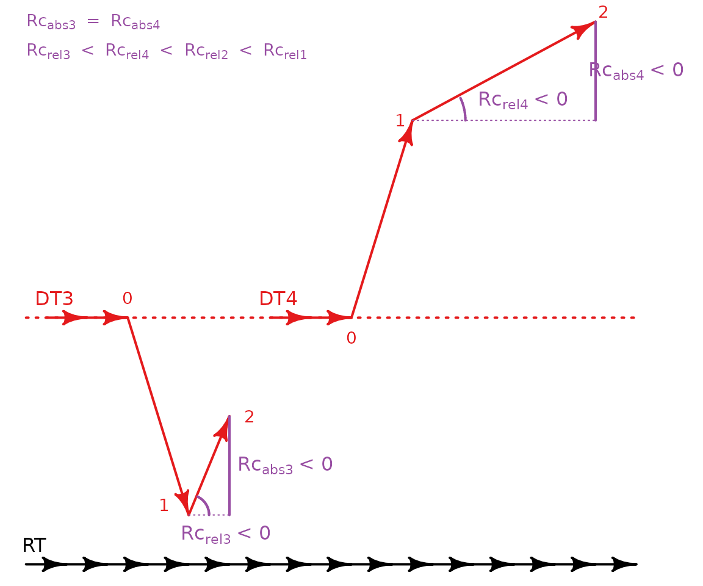

Ecological resilience to pulse disturbances
Martina Sánchez-Pinillos
Source:vignettes/Resilience.Rmd
Resilience.Rmd1. Introduction
1.1. Ecological resilience and the EDR framework
Ecological resilience is defined as the ability of ecological systems to tolerate disturbances and still maintain the same relationships between state variables (Holling, 1973; Annu. Rev. Ecol. Evol. Syst., https://doi.org/10.1146/annurev.es.04.110173.000245). Measuring ecological resilience requires considering two important components: the dynamic trends of the system, including its cyclic behaviors, and the random forces representing positive and negative feedback relationships between the components of the system (Holling, 1973). As such, assessing ecological resilience must account for the system dynamic regimes.
An ecological dynamic regime (EDR) is defined as the “fluctuations of an ecological system around some trend or average resulting from the interaction between internal processes and external forces that, in the absence of perturbations, keep the system within the basin of attraction” (Sánchez-Pinillos et al., 2023). The main dynamic trends characterizing an EDR are useful to identify cyclic behaviors and other more complex dynamics, such as transient dynamics. Additionally, the fluctuations and variability of ecological dynamics resulting from the interaction of multiple factors define the shape, size, and characteristics of dynamic regimes and potential domains of attraction (Sánchez-Pinillos et al., 2024).
The EDR framework is a set of algorithms and metrics to characterize and compare ecological dynamic regimes from empirical data so they can be used as the reference to assess ecological resilience accounting for both the dynamic trends of the system and the feedback relationships between its components.
To know more about the relevance of dynamic regimes for assessing ecological resilience, see this publication:
- Sánchez-Pinillos M., Dakos, V., Kéfi, S. 2024. Ecological dynamic regimes: A key concept for assessing ecological resilience. Biological Conservation. https://doi.org/10.1016/j.biocon.2023.110409
Additional information about the EDR framework can be found in this publication:
- Sánchez-Pinillos M., Kéfi, S., De Cáceres, M., Dakos, V. 2023. Ecological Dynamic Regimes: Identification, characterization, and comparison. Ecological Monographs. https://doi.org/10.1002/ecm.1589
1.2. About this vignette
This vignette aims to illustrate how ecological resilience can be
assessed using the EDR framework implemented in ecoregime.
In particular, this vignette focuses on the quantitative indices
proposed in Sánchez-Pinillos et al. (2024) and their geometric
rationale, taking ecological dynamic regimes as the reference to
evaluate ecological resilience.
You can install ecoregime directly from CRAN or from my
GitHub account (development version):
# install.packages("ecoregime")
# devtools::install_github(repo = "MSPinillos/ecoregime", dependencies = T, build_vignettes = T)Once you have installed ecoregime you will have to load
it:
citation("ecoregime")
#> To cite 'ecoregime' in publications use:
#>
#> Sánchez-Pinillos M, Kéfi S, De Cáceres M, Dakos V (2023). "Ecological
#> dynamic regimes: Identification, characterization, and comparison."
#> _Ecological Monographs_, e1589. <https://doi.org/10.1002/ecm.1589>.
#>
#> Sánchez-Pinillos M, Dakos V, Kéfi S (2024). "Ecological dynamic
#> regimes: A key concept for assessing ecological resilience."
#> _Biological Conservation_, 110409.
#> <https://doi.org/10.1016/j.biocon.2023.110409>.
#>
#> Sánchez-Pinillos M (2023). _ecoregime: Analysis of Ecological Dynamic
#> Regimes_. <https://doi.org/10.5281/zenodo.7584943>.
#>
#> To see these entries in BibTeX format, use 'print(<citation>,
#> bibtex=TRUE)', 'toBibtex(.)', or set
#> 'options(citation.bibtex.max=999)'.2. Assessing ecological dynamic regimes
2.1. Identifying the reference ecological dynamic regime
To assess the ecological resilience of a system, we need to identify its ecological dynamic regime (EDR) so it can be used as the reference to compare the disturbed dynamics. That is, the EDR to which the disturbed trajectories belonged before being disturbed.
Given a stability landscape composed of alternative dynamic regimes,
we can compute the dynamic dispersion (dDis) of the pre-disturbance
portion of the disturbed trajectories in relation to each alternative
EDR. The function dDis() allows us to quantify the degree
of membership of any trajectory within an EDR. You can see more
information about dDis() in
vignette("EDR_framework").
In the data included in ecoregime (i.e.,
EDR_data), you will find three abundance matrices
corresponding to a set of community trajectories forming three
ecological dynamic regimes (EDR1, EDR2, EDR3). Additionally, you will
find an abundance matrix associated with three disturbed communities
(EDR3_disturbed). Assuming that EDR1, EDR2, and EDR3 are
three alternative dynamic regimes in a stability landscape, we will see
how dDis() can be used to identify the EDR with which the
disturbed trajectories are associated.
# Species abundances in undisturbed states of the disturbed trajectories
# (Undisturbed states are identified by disturbed_states = 0)
abun_undist <- EDR_data$EDR3_disturbed$abundance[disturbed_states == 0]
selcols <- names(EDR_data$EDR1$abundance)
## EDR1 ------------------------------------------------------------------------
# Species abundances in EDR1 and the undisturbed states of disturbed trajectories
abun1_undist <- rbind(EDR_data$EDR1$abundance, abun_undist[, ..selcols])
# State dissimilarities in EDR1 and the undisturbed states of disturbed trajectories
d1_undist <- vegan::vegdist(x = abun1_undist[, paste0("sp", 1:12)], method = "bray")
# dDis of the disturbed trajectories in relation to EDR1
dDis1 <- sapply(unique(abun_undist$traj), function(iundist){
dDis(d = d1_undist, d.type = "dStates",
trajectories = abun1_undist$traj, states = abun1_undist$state,
reference = as.character(iundist))
})
## EDR2 ------------------------------------------------------------------------
# Species abundances in EDR2 and the undisturbed states of disturbed trajectories
abun2_undist <- rbind(EDR_data$EDR2$abundance, abun_undist[, ..selcols])
# State dissimilarities in EDR2 and the undisturbed states of disturbed trajectories
d2_undist <- vegan::vegdist(x = abun2_undist[, paste0("sp", 1:12)], method = "bray")
# dDis of the disturbed trajectories in relation to EDR2
dDis2 <- sapply(unique(abun_undist$traj), function(iundist){
dDis(d = d2_undist, d.type = "dStates",
trajectories = abun2_undist$traj, states = abun2_undist$state,
reference = as.character(iundist))
})
## EDR3 ------------------------------------------------------------------------
# Species abundances in EDR3 and the undisturbed states of disturbed trajectories
abun3_undist <- rbind(EDR_data$EDR3$abundance, abun_undist[, ..selcols])
# State dissimilarities in EDR3 and the undisturbed states of disturbed trajectories
d3_undist <- vegan::vegdist(x = abun3_undist[, paste0("sp", 1:12)], method = "bray")
# dDis of the disturbed trajectories in relation to EDR3
dDis3 <- sapply(unique(abun_undist$traj), function(iundist){
dDis(d = d3_undist, d.type = "dStates",
trajectories = abun3_undist$traj, states = abun3_undist$state,
reference = as.character(iundist))
})
## Compare dynamic dispersion --------------------------------------------------
# Compare dDis values for the three EDRs
dDis_df <- data.frame(EDR1 = dDis1, EDR2 = dDis2, EDR3 = dDis3)If we compare the values of dDis for each disturbed trajectory (ref. 31, ref. 32, ref. 33) and EDR (EDR1, EDR2, EDR3), we see that the lowest dDis values are associated with EDR3. We can take EDR3 as the reference to assess the ecological resilience of the three disturbed communities.
| EDR1 | EDR2 | EDR3 | |
|---|---|---|---|
| dDis (ref. 31) | 0.649 | 0.748 | 0.356 |
| dDis (ref. 32) | 0.734 | 0.556 | 0.268 |
| dDis (ref. 33) | 0.711 | 0.436 | 0.412 |
2.2. Define the main dynamic trends through representative trajectories
Once we have identified the EDR of reference, we can compute the
representative trajectories using the function retra_edr().
See vignette("EDR_framework") for more information.
# State dissimilarities for EDR3 (considering only the undisturbed trajectories)
d_EDR3 <- vegan::vegdist(EDR_data$EDR3$abundance[, paste0("sp", 1:12)])
# Representative trajectories
retra <- retra_edr(d = d_EDR3,
trajectories = EDR_data$EDR3$abundance$traj,
states = EDR_data$EDR3$abundance$state, minSegs = 5)Although there are five representative trajectories, we will select “T4” as the reference for being the longest and covering all regions of the EDR relatively well.
# Summarize retra
summary(retra)
#> ID Size Length Avg_link Sum_link Avg_density Max_density Avg_depth
#> T1 T1 8 0.56912543 0.12435644 0.24871287 7.250000 8 4.750000
#> T2 T2 6 0.39900498 0.10718905 0.21437811 7.666667 8 4.666667
#> T3 T3 4 0.08970149 0.03482587 0.03482587 6.500000 7 6.500000
#> T4 T4 16 1.11654181 0.08961127 0.53766760 6.625000 8 5.125000
#> T5 T5 6 0.35468137 0.08723881 0.17447761 7.333333 10 5.333333
#> Max_depth
#> T1 6
#> T2 6
#> T3 7
#> T4 7
#> T5 7
# Define T4 as the unique representative trajectory and generate an object of class 'RETRA'
retra_ref <- define_retra(data = retra$T4$Segments, d = d_EDR3,
trajectories = EDR_data$EDR3$abundance$traj,
states = EDR_data$EDR3$abundance$state,
retra = retra)
# Plot EDR3 and its representative trajectories
plot(retra, d = d_EDR3,
trajectories = EDR_data$EDR3$abundance$traj,
states = EDR_data$EDR3$abundance$state, select_RT = "T4",
main = "Representative trajectories in EDR3")
legend("topleft", c("Representative trajectory 'T4'",
"Other representative trajectories",
"Individual trajectories in EDR3"),
lty = 1, col = c("red", "black", "grey"), bty = "n")
3. Metrics of ecological resilience to pulse disturbances
When an ecological system is disturbed, its dynamics can deviate from the reference EDR and its representative trajectories. Depending on the immediate impact of the disturbance and the changes in the state variables following the release of the disturbance, post-disturbance trajectories can be characterized through four complementary indices: resistance (Rt), amplitude (A), recovery (Rc), and net change (NC).

3.1. Resistance
The resistance index (Rt) quantifies the impact of the disturbance on the system based on the immediate changes in the state variables. That is, it is a measure of how similar the disturbed (1) and the pre-disturbance (0) states are (Sánchez-Pinillos et al., 2019). As such, the resistance index does not depend on the position of the system within the EDR.
where is the dissimilarity between the pre-disturbance (0) and the disturbed (1) states.
Given the three disturbed trajectories in EDR3 (i.e.,
EDR3_disturbed), we can compute the resistance index using
the function resistance():
# To calculate resistance, we need a state dissimilarity matrix for the disturbed trajectories
d_disturbed <- vegan::vegdist(EDR_data$EDR3_disturbed$abundance[, paste0("sp", 1:12)],
method = "bray")
# Compute resistance
# Note that the disturbed states are identified by disturbed_states = 1
Rt <- resistance(d = d_disturbed,
trajectories = EDR_data$EDR3_disturbed$abundance$traj,
states = EDR_data$EDR3_disturbed$abundance$state,
disturbed_trajectories = unique(EDR_data$EDR3_disturbed$abundance$traj),
disturbed_states = EDR_data$EDR3_disturbed$abundance[disturbed_states == 1]$state)The three hypothetical systems show a relatively high resistance (close to 1) to the disturbance:
| Disturbed trajectories | Rt |
|---|---|
| 31 | 0.958 |
| 32 | 0.812 |
| 33 | 0.693 |
3.2. Amplitude
The amplitude (A) quantifies how much the system is deviated from its trajectory during the disturbance assuming that, in the absence of disturbances, the system would keep a constant distance to a representative trajectory taken as the reference.
The amplitude can be calculated in absolute terms as the difference of the dissimilarity between the disturbed state (1) and the representative trajectory () and the dissimilarity between the pre-disturbance state (0) and the representative trajectory ():
Alternatively, the amplitude can be calculated in relation to the impact of the disturbance (). In this case, the amplitude quantifies the ability of the system to remain close to the representative trajectory in relation to the changes in the state variables provoked by the disturbance.
In any case, positive amplitude values indicate that the system is deviated towards the boundaries of the EDR, whereas negative values indicate the deviation towards the representative trajectory taken as the reference.

Amplitude can be calculated using the function
amplitude():
# We need a state dissimilarity matrix containing the states of the disturbed
# trajectories and the representative trajectory taken as the reference
abun <- rbind(EDR_data$EDR3$abundance, EDR_data$EDR3_disturbed$abundance, fill = T)
d <- vegan::vegdist(abun[, paste0("sp", 1:12)], method = "bray")
# Compute amplitude
A <- amplitude(d = d,
trajectories = abun$traj,
states = abun$state,
disturbed_trajectories = abun[disturbed_states == 1]$traj,
disturbed_states = abun[disturbed_states == 1]$state,
reference = retra_ref, method = "nearest_state")The three considered systems show positive amplitude values, indicating that the disturbance lead them towards the boundaries of the EDR. Whereas the absolute amplitude of trajectory 31 () is smaller than the absolute amplitude of trajectory 32 (), both have similar relative values (; ). This result indicates that despite the small deviation of trajectory 31 from the representative trajectory during the disturbance, such deviation is disproportionately high in relation to the impact of the disturbance on the state variables.
| Disturbed trajectories | Reference | Aabs | Arel |
|---|---|---|---|
| 31 | T4.1 | 0.027 | 0.653 |
| 32 | T4.1 | 0.119 | 0.631 |
| 33 | T4.1 | 0.268 | 0.871 |
3.3. Recovery
The recovery index (Rc) quantifies the ability of the system to reorganize itself after a disturbance and evolve towards the representative trajectory representing its dominant dynamic trends.
The recovery can be calculated in absolute terms as the difference of the dissimilarity between the disturbed state (1) and the representative trajectory () and the dissimilarity between one of the post-disturbance states (> 1) and the representative trajectory ():
Alternatively, the recovery can be calculated in relation to the changes in the state variables that the system must perform to return towards the representative trajectory from the disturbed state (). In this case, the index penalizes the systems that require major restructuring of the state variables to return towards the representative trajectory (positive recovery) and gives less negative values to the systems minimizing the escape from the dynamic regime through major changes in its state variables.
Both absolute and relative recovery indices are positive when the system evolves towards the representative trajectory. Otherwise, negative values indicate that the system evolves towards the boundaries of the EDR.


Recovery can be calculated using the function recovery()
considering all states after the disturbed state (> 1):
# Compute recovery using the same data used for amplitude
Rc <- recovery(d = d,
trajectories = abun$traj,
states = abun$state,
disturbed_trajectories = abun[disturbed_states == 1]$traj,
disturbed_states = abun[disturbed_states == 1]$state,
reference = retra_ref, method = "nearest_state")We can plot the variation of recovery over time considering all post-disturbance states:
# Number of states after the disturbed state
Rc <- data.table::data.table(Rc)
Rc[, ID_post := 1:(.N), by = disturbed_trajectories]
# Plot absolute recovery over time
plot(x = range(Rc$ID_post), y = range(Rc$Rc_abs), type = "n",
xlab = "Nb. states after disturbance", ylab = "Absolute recovery",
main = "Variation of absolute recovery")
for (i in unique(Rc$disturbed_trajectories)) {
lines(Rc[disturbed_trajectories == i, c("ID_post", "Rc_abs")],
col = which(unique(Rc$disturbed_trajectories) %in% i) + 1)
}
legend("bottomleft", legend = unique(Rc$disturbed_trajectories), lty = 1,
col = seq_along(unique(Rc$disturbed_trajectories)) + 1, bty = "n")
# Plot relative recovery over time
plot(x = range(Rc$ID_post), y = range(Rc$Rc_rel), type = "n",
xlab = "Nb. states after disturbance", ylab = "Relative recovery",
main = "Variation of relative recovery")
for (i in unique(Rc$disturbed_trajectories)) {
lines(Rc[disturbed_trajectories == i, c("ID_post", "Rc_rel")],
col = which(unique(Rc$disturbed_trajectories) %in% i) + 1)
}
legend("topright", legend = unique(Rc$disturbed_trajectories), lty = 1,
col = seq_along(unique(Rc$disturbed_trajectories)) + 1, bty = "n")3.4. Net change
Net change (NC) quantifies how much the system is deviated from its trajectory after the release of the disturbance assuming that, in the absence of disturbances, the system would keep a constant distance to a representative trajectory taken as the reference.
Like amplitude and recovery, net change can be calculated in absolute or relative terms. The absolute net change is expressed as the difference of the dissimilarity between one of the post-disturbance states (> 1) and the representative trajectory () and the dissimilarity between the pre-disturbance state (0) and the representative trajectory ():
The relative net change is calculated in relation to the changes produced in the state variables between the pre-disturbance and the post-disturbance states (). In this way, the index penalizes the systems that deviated from the expected trajectory despite being very similar to the pre-disturbance state.
As in the amplitude index, positive values indicate that the system is deviated towards the boundaries of the EDR and negative values indicate the deviation towards the representative trajectory taken as the reference.

The function net_change() included in
ecoregime can be used to calculate the net change of all
post-disturbance states in relation to the pre-disturbance state:
# Compute net change using the same data used for amplitude
NC <- net_change(d = d,
trajectories = abun$traj,
states = abun$state,
disturbed_trajectories = abun[disturbed_states == 1]$traj,
disturbed_states = abun[disturbed_states == 1]$state,
reference = retra_ref, method = "nearest_state")We can plot the variation of net change over time considering all post-disturbance states:
# ID post-disturbance states
NC <- data.table::data.table(NC)
NC[, ID_post := 1:(.N), by = disturbed_trajectories]
# Plot absolute net change over time
plot(x = range(NC$ID_post), y = range(NC$NC_abs), type = "n",
xlab = "Nb. states after disturbance", ylab = "Absolute net change",
main = "Variation of absolute net change")
for (i in unique(NC$disturbed_trajectories)) {
lines(NC[disturbed_trajectories == i, c("ID_post", "NC_abs")],
col = which(unique(NC$disturbed_trajectories) %in% i) + 1)
}
legend("topleft", legend = unique(NC$disturbed_trajectories), lty = 1,
col = seq_along(unique(NC$disturbed_trajectories)) + 1, bty = "n")
# Plot relative net change over time
plot(x = range(NC$ID_post), y = range(NC$NC_rel), type = "n",
xlab = "Nb. states after disturbance", ylab = "Relative net change",
main = "Variation of relative net change")
for (i in unique(NC$disturbed_trajectories)) {
lines(NC[disturbed_trajectories == i, c("ID_post", "NC_rel")],
col = which(unique(NC$disturbed_trajectories) %in% i) + 1)
}
legend("bottomleft", legend = unique(NC$disturbed_trajectories), lty = 1,
col = seq_along(unique(NC$disturbed_trajectories)) + 1, bty = "n")
4. Assessing the ecological resilience of systems affected by pulse disturbances
Altogether, the metrics of amplitude, recovery, and net change define the geometry of disturbed trajectories in relation to the reference EDR. Additionally, the resistance index helps interpret the response of the system considering the immediate impact of the disturbance.
As an example, we will take the three disturbed trajectories used in the previous section. For simplicity, we will only focus on resistance and the absolute values of amplitude, recovery, and net change and we will consider the 14th post-disturbance state (last post-disturbance state of Trajectory 33) of all trajectories to calculate recovery and net change.
# Merge the results for resistance, amplitude, recovery, and net change
results <- Reduce(function(x, y) merge(x, y, all = T),
list(Rt, A, Rc, NC))
results <- results[which(results$ID_post == 14),
c("disturbed_trajectories", "Rt", "A_abs", "Rc_abs", "NC_abs")]| Disturbed trajectories | Rt | Aabs | Rcabs | NCabs |
|---|---|---|---|---|
| 31 | 0.958 | 0.027 | -0.474 | 0.502 |
| 32 | 0.812 | 0.119 | 0.099 | 0.020 |
| 33 | 0.693 | 0.268 | 0.283 | -0.016 |
Based on the values of the indices, we can figure out the shape of the disturbed trajectories. For example, Trajectory 31 was very resistant to the immediate impact of the disturbance (in terms of changes in the state variables) () and the amplitude provoked by the disturbance was very small (). However, unlike Trajectory 32 and Trajectory 33, the recovery was negative () and the net change positive and relatively high (). Thus, despite the relatively low impact of the disturbance, the values of recovery and net change indicate that Trajectory 31 goes away from the reference EDR and the system potentially changes to an alternative dynamic regime.
Both Trajectory 32 and Trajectory 33 showed positive values of recovery and net change values close to zero. In both cases, amplitude and recovery have similar values, respectively (Trajectory 32: , ; Trajectory 33: , ), indicating that these systems are able to reorganize and remain within the EDR.
Trajectory 32 was relatively resistant to the impact of the disturbance () and showed a relatively low deviation from the representative trajectory (). In contrast, Trajectory 33 was more severely impacted by the disturbance (; ) but showed a high recovery capacity (). Thus, while both communities could be considered resilient, they showed different strategies. Whereas Trajectory 32 represents a resistant dynamic within the EDR, Trajectory 33 represents a more variable system whose dynamics visit the borders of the EDR to eventually return towards the representative trajectory.
To support our evaluation of the ecological resilience of disturbed trajectories, we can calculate the dynamic dispersion (dDis) of the post-disturbance portion of the disturbed trajectories in relation to the trajectories in the EDR.
# Species abundances in post-disturbance states of the disturbed trajectories
# The states after the release of the disturbance are identified by disturbed_states > 1
abun_post <- EDR_data$EDR3_disturbed$abundance[disturbed_states > 1]
selcols <- names(EDR_data$EDR3$abundance)
# Species abundances in EDR3 and the post-disturbance states of disturbed trajectories
abun3_post <- rbind(EDR_data$EDR3$abundance, abun_post[, ..selcols])
# State dissimilarities in EDR3 and the post-disturbance states of disturbed trajectories
d3_post <- as.matrix(vegan::vegdist(x = abun3_post[, paste0("sp", 1:12)], method = "bray"))
# dDis of each disturbed trajectory
dDis_dist <- sapply(unique(abun_post$traj), function(idist){
rm_disturbed <- unique(abun_post$traj[which(abun_post$traj != idist)])
irm <- which(abun3_post$traj %in% rm_disturbed)
dDis(d = d3_post[-irm, -irm], d.type = "dStates",
trajectories = abun3_post$traj[-irm],
states = abun3_post$state[-irm],
reference = as.character(idist))
})The values of dDis confirm the resilience of Trajectory 32 and show that, despite being able to recover after the disturbance, the dynamic represented by Trajectory 33 is anomalous in relation to the other dynamics in the EDR.
| Disturbed trajectories | dDis |
|---|---|
| 31 | 0.463 |
| 32 | 0.257 |
| 33 | 0.474 |
Finally, we can illustrate the responses of the three disturbed communities by representing their trajectories in relation to the reference EDR and its representative trajectory:
# Plot EDR3 and its representative trajectories
plot(retra_ref, d = d,
trajectories = abun$traj,
states = abun$state,
traj.colors = c(rep("grey", 30), 2:4),
main = "Comparison of disturbed trajectories and EDR3")
legend("topleft", c("Representative trajectory",
"Individual trajectories in EDR3",
"Trajectory 31",
"Trajectory 32",
"Trajectory 33"),
lty = 1, col = c("black", "grey", 2:4), bty = "n")